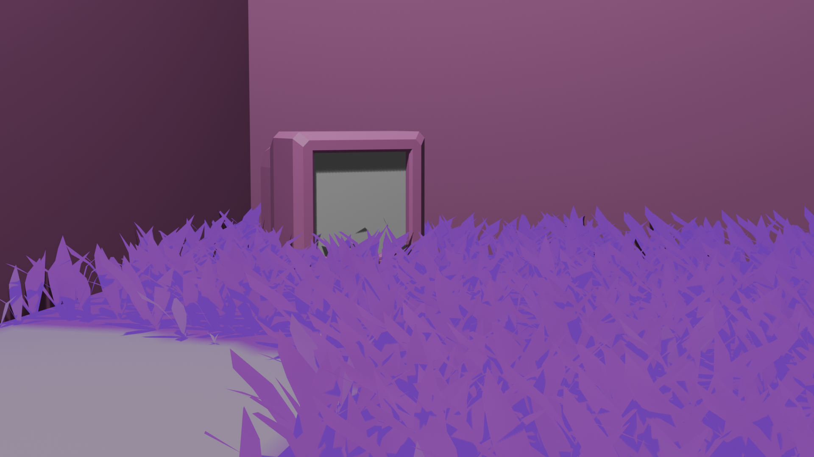
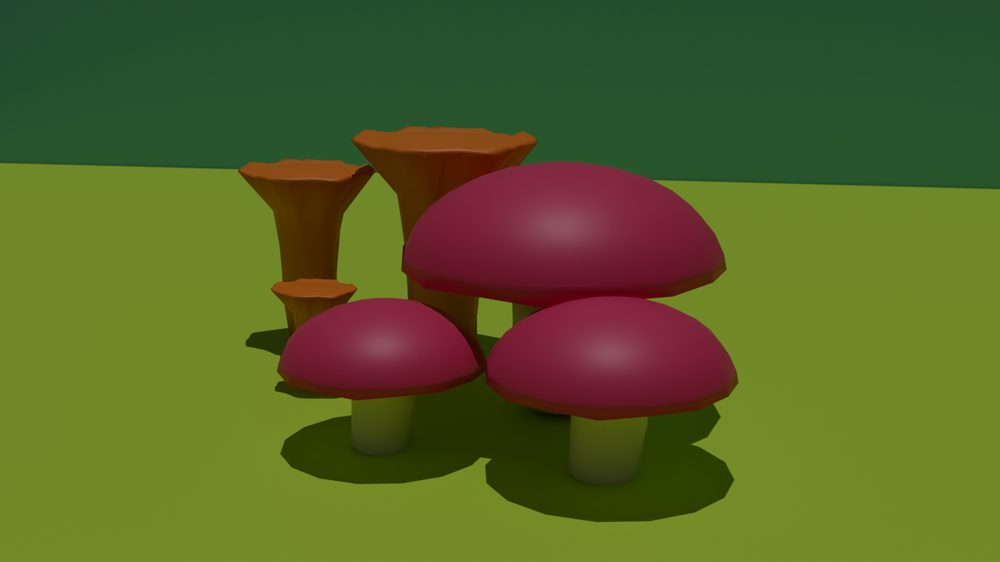
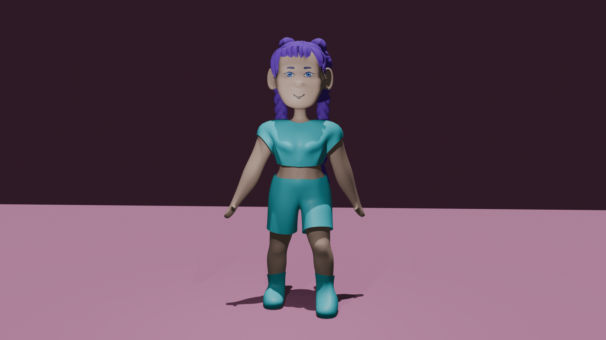
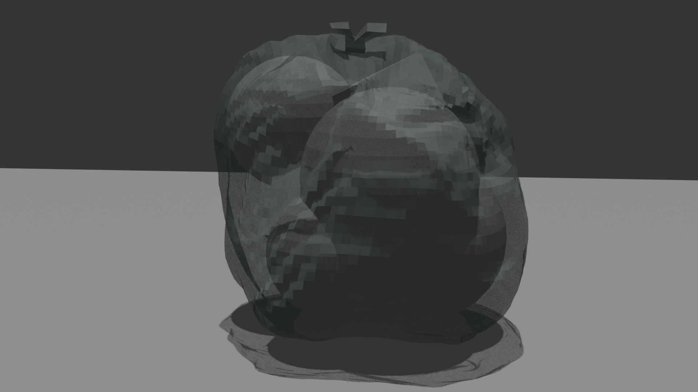

3D-Modellierung
Neben traditioneller und digitaler Kunst interesse ich mich auch für 3D-Modellierung.
Dabei nutze ich hauptsächlich Blender um zu modellieren, animieren und Bilder zu erzeugen.
Aktuell befasse ich mich mit dem Design und der Modellierung von Charakteren.
Hier eine kleine Auswahl an den 3D-Modellen, die ich bisher gemacht habe.



